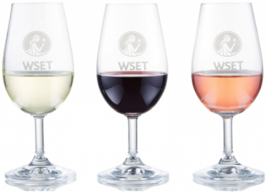

Una guía sobre tipos y estilos de vinos
Cuando se mira una carta de vinos o el estante repleto de una vinoteca, el mundo del vino puede parecer abrumador y complejo, por lo que es recomendable comenzar con algunos conceptos básicos. A continuación te ofrecemos una guía sencilla sobre los tipos y estilos de vino que podrás encontrar en cualquier tienda de vinos o restaurantes.
Para comenzar, casi todos los vinos se pueden agrupar en una de estas tres categorías: tranquilos, fortificados o espumosos.
1-Vinos Tranquilos
Puede parecer simple, pero de forma muy general se puede decir que un vino tranquilo es cualquier vino que no es espumoso. Con diferencia, ésta es la categoría de vinos más amplia y la mayor parte de los vinos se pueden englobar dentro de esta categoría, por lo que precisamos profundizar un poco mas…

2.Vinos Espumosos
Los vinos espumosos son gaseosos porque mantienen dióxido de carbono atrapado dentro de ellos. Su brillo y burbujas son perfectos para celebraciones y son vinos excelentes para regalar y como aperitivo. Cuando se sirven los vinos espumosos, hay que asegurarse que estén bien fríos, ayudará a mantenerlos burbujeantes durante más tiempo después de abiertos. Hay muchos vinos espumosos diferentes. Cada uno tiene sus propios sabores, colores, cuerpo y aromas determinados por las variedades de uva utilizadas, dónde se hayan cultivado, pero también cómo fueron elaborados y envejecidos. Ejemplos de vinos espumosos: Champagne (Francia), Cava (España), Prosecco (Italia).